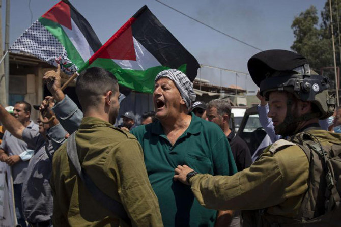

.jpg)


Histoire de la Palestine
L’histoire de la Palestine retrace les événements s'étant déroulés dans la région de la Palestine, située au Proche-Orient, délimitée par la mer Méditerranée à l'ouest, et par le désert à l'est du Jourdain et au sud par la péninsule du Sinaï1,Note 1.
La zone n'est pas clairement définie. Elle est centrée sur les régions de la Galilée, de la Samarie et de la Judée. Ses limites sont au nord la Phénicie et le mont Liban et au sud la Philistie et l'Idumée. À l'époque des croisades, le Pérée au nord-est de la mer Morte, la Batanée et la Décapole au-delà du Jourdain y étaient attachés. La région de Palestine correspond aux territoires aujourd'hui situés à l'ouest du Jourdain et inclut l'État d'Israël, les territoires palestiniens occupés, une partie du royaume de Jordanie, le Liban du Sud et le plateau du Golan1,2.
Charnière entre la vallée du Nil et la « terre entre les fleuves » (Mésopotamie), la région de la Palestine est habitée depuis des millénaires et a connu la présence et le brassage de nombreux peuples et la domination de nombreux empires : Cananéens, Hébreux, Philistins, Assyriens, Perses, Grecs, Romains, Byzantins, Arabes, Croisés, Ottomans et Britanniques.
À partir du XXe siècle, la région est le théâtre principal des conflits israélo-arabes : la guerre de 1948-1949, la crise du canal de Suez (1956), la guerre des Six Jours (1967), la guerre du Kippour (1973), la guerre du Liban (1982), la première intifada (1988), la seconde intifada (2000-2005), le conflit israélo-libanais de 2006, la guerre de Gaza de 2008-2009, celle de 2012, celle de juillet-août 2014 et la crise de 2021, puis celle de 2023, suivie du conflit ouvert a partir du 7 octobre.
Paléolithique
Les plus anciens vestiges d'Hominidés en Palestine ont été trouvés sur le site archéologique d'Ubeidiya, à quelque 3 km au sud du lac de Tibériade, dans la vallée du rift du Jourdain, fouillé en 1960 par Moshe Stekelis (en) puis Ofer Bar-Yosef et Naama Goren-Inbar. Ils remontent au Paléolithique inférieur (Pléistocène), soit à plus d'un million d'années. Le site a fourni des outils caractéristiques de l'industrie lithique de l'Acheuléen constituant des traces des premières migrations de l’Homo erectus hors d'Afrique3,4.
Les vestiges du site préhistorique du Pont des Filles de Jacob (Gesher Bnot Ya'aqov), entre la Haute Galilée et le plateau du Golan, datés de 790 000 ans, pourraient bien représenter la plus ancienne utilisation du feu documentée5. Également étudié par Moshe Stekelis en 1960, il a révélé la présence d'une quantité importante de hachereaux et l'utilisation du basalte comme matière première6.
D'autres fossiles découverts ont un âge estimé à environ 300 000 ans. La fréquentation des grottes par l'homme semble commencer à l'acheuléen supérieur.
En janvier 2018 est annoncée la découverte en Israël du plus ancien Homo sapiens hors d’Afrique qui serait vieux de 180 000 ans7.
Le fossile de l'« Homme de Galilée », du type Homo heidelbergensis, découvert en 1925 dans la grotte des Voleurs au-dessus du Wadi Amud par Francis Turville-Petre, date d'environ 140 000 ans. L'original est conservé au musée Rockefeller, un moulage est exposé au musée d'Israël.
Au Paléolithique moyen les Néandertaliens et les hommes anatomiquement modernes du Moustérien se trouvent simultanément en Palestine. Des vestiges de ces derniers sont découverts dans les grottes de Es Skhul et de Qafzeh et des fossiles associés à l'homme de Neandertal sont trouvés sur les sites de Tabun, Amud (de) et Kébara.
Es Skhul, l'une des quatre grottes de Nahal Me’arot sur le mont Carmel au sud d'Haïfa, est fouillé initialement sans résultat par Dorothy Garrod en 1928, puis par Theodore D. McCown (de) en 1931 et 1932, et fournit les restes d'une dizaine d'individus datés d'environ 80 000 à 130 000 ans.
Qafzeh, à 2,5 km au sud de Nazareth en Galilée dans le nord d'Israël, est découvert en 1933 par René Neuville et fouillé entre 1965 et 1979 par Bernard Vandermeersch rejoint par Ofer Bar-Yosef. Le site livre un nombre important de sépultures datées d'environ 90 000 à 100 000 ans.
La grotte de Tabun, autre grotte du Nahal Me’arot, est découverte et fouillée par Dorothy Garrod de 1929 à 1934. Arthur Jelinek dirige entre 1967 et 1972 les fouilles des couches inférieures attribuées au complexe Acheuléo-Yabrudien. Elles sont à nouveau examinées dans les années 1990 par Avraham Ronen (he)8. Les couches moustériennes révèlent la sépulture d'une femme de Neandertal datée d'environ 80 000 à 120 000 ans conservée au musée d'histoire naturelle de Londres.
Outre la grotte des Voleurs, le Nahal Amud recèle d'autres grottes, notamment la grotte d'Amud (de) dans laquelle l'équipe des archéologues japonais Hisashi Suzuki et Fuyuji Takai a découvert au cours des années 1960 de nombreux vestiges de la culture moustérienne et notamment la sépulture d'un Homme de Néandertal d'environ 1,80 m, à la capacité crânienne de 1 740 cm3 et qui aurait atteint 25 ans.
La grotte de Kébara se trouve sur le versant ouest du mont Carmel, dans la réserve du Ramat HaNadiv (en) à proximité de Zikhron Yaakov, à une dizaine de kilomètres au nord-est de Césarée. Elle est découverte par Moshe Stekelis en 1929 et fouillée par Dorothy Garrod et Francis Turville-Petre dès le début des années 1930. Les résultats les plus significatifs sont obtenus par l'équipe franco-israélienne de Bernard Vandermeersch et d'Ofer Bar-Yosef en 1983 avec la découverte de « Moshe », le squelette de néandertalien le plus complet trouvé à ce jour, datant d'environ 60 000 ans et associé à l'industrie moustérienne. Selon Vandermeersch et Bar-Yosef, les néandertaliens de Kébara seraient venus d'Europe.
Épipaléolithique
Entre le XIe millénaire av. J.-C. et le IXe millénaire av. J.-C. se développe, sur le territoire actuel du Liban, d'Israël et du Sinaï, la culture natoufienne, la première à expérimenter le mode de vie sédentaire, dont on retrouve les vestiges
Néolithique (-8300 à -4800)
Dès le IXe millénaire av. J.-C., des peuplades néolithiques domestiquent des plantes et des animaux, se sédentarisent et pratiquent l’agriculture et l’élevage. Vers 10 000 à 8 000 ans avant l'ère commune, l'outillage en os paraît prendre une réelle importance et le mobilier en pierre un essor caractéristique. À cette période, les conditions climatiques sont favorables (plus de précipitations et températures moins élevées).
Dès le VIIIe millénaire av. J.-C., la ville de Jéricho (Er Riha), constitue une des plus anciennes cités du monde. On estime que cette époque coïncide avec les premières cités constituées.
Au cours du dernier quart du VIIe millénaire av. J.-C., la céramique fait son apparition, ainsi que d'autres formes d’artisanat.
Le Proche Orient du VIe et de la première moitié du Ve millénaire av. J.-C. est mal connue. On suppose des déplacements de populations qui peuvent être dus à des variations climatiques. Les reliefs et la région côtière sont occupés par une civilisation à caractère forestier comme en témoigne la prédominance des instruments destinés au travail du bois.
Chalcolithique (-4300 à -3300)
Cette période est marquée par la culture ghassulienne, nommée d'après Teleilat Ghassul (~4 500 - 3 300). La nécropole d'Adeimeh, à 2 km de Teleilat Ghassul, montre plusieurs formes de tombes, dont des dolmens et des cairn circulaires. Dans la plaine côtière (à Azor) on a découvert des ossuaires et des poteries ayant souvent la forme d'habitations. Cette culture pourrait être indigène, mais montre des similitudes avec celles de Byblos et Ougarit, ainsi qu'avec l'Égypte du IVe millénaire av. J.-C..
Cette période est marquée par l'utilisation importante du cuivre, comme le démontre la découverte de nombreux objets à Nahal Mishmar. Des habits trouvés dans la grotte démontrent une réelle compétence technologique dans la confection de vêtements en lin. Près de Beer-Sheva, de nombreuses statuettes d'ivoire fabriquées localement présentent quelques similitudes avec celles des cultures Badarian et Amratian en Égypte. On voit alors apparaître des structures techno-économiques adaptées aux régions sèches : y vivent de petites collectivités vivant de la culture de céréales et de l'élevage du gros et du petit bétail.
Les échanges qui débutent entre la Palestine et l'Égypte, à travers le désert du Sinaï, vers la fin du IVe millénaire av. J.-C. prennent de l'ampleur grâce à l'utilisation des bovidés comme animaux de bât, capables de franchir les quelque 200 kilomètres de quasi-désert séparant le sud palestinien du delta égyptien. Dès lors, la Palestine joue le rôle de zone de passage où se croisent les influences, et souvent les armes, des grands empires d'Égypte et du Proche-Orient asiatique.
Vers la fin du IVe millénaire av. J.-C. la civilisation des agriculteurs-éleveurs disparaît sans raison apparente. Les sites de cette époque sont abandonnés. Il est difficile d'établir des liens avec la formation de la civilisation cananéenne du IIIe millénaire av. J.-C..
Haute Antiquité
Le IIIe millénaire av. J.-C. est celui de la civilisation cananéenne qui s'étend au-delà de la fin de la préhistoire. Bien que l'écriture n'apparaisse pas dans la région avant la seconde moitié du IIe millénaire av. J.-C., compte tenu de l'état de surproduction, de centralisation et de redistribution des surplus alimentaires, il est généralement considéré par les historiens que ce nouvel ordre économique, social et politique marque l'entrée de Canaan dans l'histoire, soit dans le courant du IIIe millénaire av. J.-C.. Par les échanges avec l’Égypte, la région se développe et s’enrichit, se spécialise dans le commerce de la céramique et de nombreuses constructions voient le jour. La civilisation cananéenne est organisée sur un système de cités-États, fruits d'une osmose entre agriculteurs sédentaires et pasteurs semi-nomades. De nombreuses villes cananéennes se développent et se fortifient.
Les historiens considèrent généralement que la période cananéenne s'étale du début du IIIe millénaire av. J.-C. à la fin du XXIIIe siècle av. J.-C..
Âge du bronze ancien (-3300 à -2200)
Le Bronze ancien se décompose généralement en quatre périodes :
Bronze ancien I (-3300 à -2900)
Bronze ancien II (-2900 à -2600)
Bronze ancien III (-2600 à -2350)
Bronze ancien IV (-2350 à -2200)
Ce sous-découpage est essentiellement basé sur la chronologie égyptienne, les artéfacts archéologiques permettant de lier les deux régions. Des variations d'un siècle selon les sources ne constituent pas des écarts significatifs. Le Bronze ancien I correspond à la Ire dynastie, le Bronze ancien II à la IIe dynastie, le Bronze ancien III à la IVe et Ve dynastie, et le Bronze ancien IV à la VIe dynastie.
Malgré le nom d'âge du bronze, le cuivre reste en usage dans la région. Kathleen Kenyon a proposé d'appeler cette période « période urbaine » car la fondation de villes constitue une innovation en Canaan, mis à part Jéricho qui existait déjà au néolithique précéramique. Le Bronze ancien est aussi appelé « période cananéenne » du nom de ses habitants.
Au début du Bronze ancien, de nouvelles populations arrivent par vagues successives depuis le nord, semble-t-il. La culture de ces nouveaux arrivants, qu'on qualifie de cananéens, est différente de celle des habitants du chalcolithique. Ils s'installent principalement dans les vallées et les hautes terres à proximité de sources. L'économie de ces populations est basée sur l'agriculture, contrairement aux populations semi-nomades du chalcolithique. Peu de sites sont occupés dans les régions semi-arides, à l'exception d'Arad.
Le Bronze ancien est caractérisé par l'apparition de cités cananéennes puissamment fortifiées, sans qu'on connaisse la cause de telles fortifications. Les principaux sites de cette période sont Tel Bet Yerah (au sud du lac de Tibériade), Megiddo (dans la vallée de Jezreel), Gezer, Tel Erani, Tel Yarmouth, Afek dans la Shéphélah et Arad dans le Néguev oriental. Ces centres urbains fortifiés gèrent un petit district agricole vivant de la culture des céréales, des arbres fruitiers et des légumes. Des objets importés d'Égypte indiquent des liens commerciaux.
À partir du Bronze ancien II, on ne trouve plus de poteries égyptiennes dans les sites cananéens, même si les relations avec l'Égypte sont encore attestées comme en témoignent les campagnes militaires égyptiennes en Canaan. On dispose par exemple de la description d'une campagne contre une ville cananéenne dans une tombe de la Ve dynastie. Les campagnes de Pépi Ier contre les « habitants des sables », dirigées par son vizir Ouni, témoignent de l'intérêt de l'Égypte pour la région. Ces campagnes militaires signent d'ailleurs la chute finale des villes cananéennes du Bronze Ancien. Elles n'en sont pas nécessairement la cause, mais elles ont pu être motivées par l'affaiblissement général des cités qui les rendaient plus vulnérables. La fin du Bronze ancien se traduit par une destruction générale des cités cananéennes et par un retour au semi-nomadisme des populations à partir de -2200. Cette chute se déroule dans un contexte général de bouleversements sociaux au Proche-Orient, qui s'exprime en Égypte par une période d'éclatement du pouvoir central connu sous le nom de Première Période intermédiaire.
Notons cependant que certaines villes, telle qu'Arad étaient déjà abandonnée depuis la fin du Bronze ancien II.
Bronze ancien I (-3300 à -3050)
Les régions densément peuplées du Chalcolithique sont abandonnées. Seuls 30 % des sites du Bronze ancien sont bâtis sur des sites occupés à l'ère précédente. Les régions habitées sont maintenant les plaines du nord, les plaines côtières, les collines centrales, la vallée du Jourdain et la Shéphélah.
L'économie devient principalement agricole, avec l'introduction de la culture du raisin et des figues. Par ailleurs, des cimetières indiquent que des populations nomades pastorales vivent dans les régions plus arides et dans le Sinaï.
La culture, en partie indigène, est aussi influencée par la culture mésopotamienne. Il ne semble pas y avoir eu d'importantes migrations à la fin du Chalcolithique.
Des poteries retrouvées dans les sites du Néguev ainsi qu'à Tel Erani (probablement la ville la plus importante de la période) montrent que l'Égypte était présente dans le sud du pays depuis la fin de la période pré-dynastique jusqu'à la Ire dynastie. Dans l'est du delta du Nil, on retrouve également quelques poteries cananéennes. De nombreux sceaux du pharaon Narmer sont retrouvés en Palestine[réf. nécessaire] et celui-ci est peint dans son pays combattant des Asiatiques et capturant une cité fortifiée. L'ensemble dépeint un fort intérêt, et peut-être une occupation militaire, de l'Égypte pour le sud du pays.
Prise de contrôle de Gaza par le Hamas
Le 12 juin et le 14 juin 2007 le Hamas chasse l'OLP de Gaza dans une offensive contre les attributs du pouvoir présidentiel de Mahmoud Abbas et plus généralement contre les forces du Fatah. Cette ultime offensive fait suite aux tensions interpalestiniennes qui éclataient régulièrement depuis plusieurs mois. La Croix-Rouge internationale estime que plus de 550 personnes ont été blessées et au moins 116 tuées au cours de ces affrontements entre Palestiniens52.
Depuis juin 2007, à la suite de la prise de contrôle de Gaza par le Hamas, l'autorité palestinienne est contestée dans ce territoire. Il y existe un président de fait, Abdel Aziz Doweik depuis 2009.
Homme
Femme